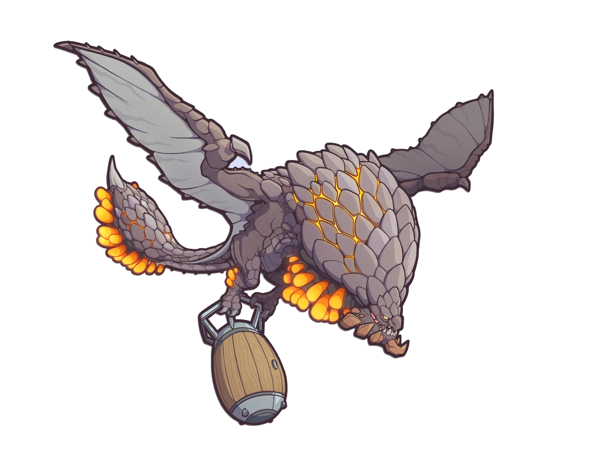

BAZELGEUSE
Le Bazelgeuse est une grande wyverne volante recouverte de grosses écailles argentées avec des sortes de bombes organiques sous le cou, la queue et les talons. Sa taille imposante fait qu'il possède des ailes de très grande envergure.
Les Bazelgeuse sont des wyvernes nomades et n'ont pas pour ainsi dire de territoire propre. On peut donc les retrouver dans à peu près toutes les régions du Nouveau monde et ce sont souvent des prédateurs alpha de la chaîne alimentaire locale, bien que l'écosystème se soit très bien adapté à sa présence.